Part A · Pretrained Model
Visualizing Training and Sampling
Part A uses a pretrained model called PixNerd-XXL-P16-T2I. It makes 512 × 512 images from a text prompt, and I did no training. Unless I say otherwise, I used the step size h = 0.02, the guidance weight w = 7 (when guidance is used) and random seed 180, on a Tesla T4 GPU.
- 1.1 Noisy inputs
- 1.2 Gaussian blur
- 1.3 One-step denoising
- 1.4 Visualizing velocity
- 1.5 Euler sampling
- 1.6 Generating from noise
1.1 Constructing Noisy Training Inputs
I used a photo of a cake. It is center-cropped and resized to 512 × 512, with the RGB values in [-1, 1]. Let x1 be the clean image and ε be Gaussian noise. The noisy image at time t is xt = (1 - t) ε + t x1, so t = 0 is pure noise and t = 1 is the clean image. The model takes (xt, t, prompt) and predicts the velocity x1 - ε. I sampled one noise tensor and used the same one for t = 0.25, 0.50 and 0.75, and I reuse it in 1.2 to 1.5.
def interpolate(image, noise, t):
return (1 - t) * noise + t * image
I checked both ends with asserts: interpolate(image, noise, 0) gives exactly the
noise, and interpolate(image, noise, 1) gives exactly the image.
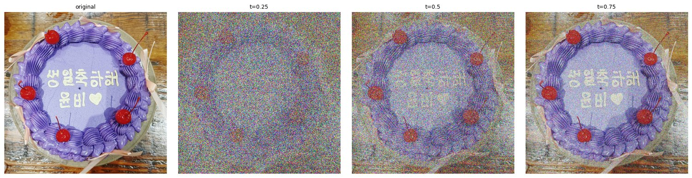
1.2 Classical Denoising (Gaussian Blur)
At time t the image is scaled down by t. If I divide by t, I get
xt / t = x1 + ((1 - t) / t) ε. This brings the image back to its
normal brightness, but the noise is now multiplied by (1 - t) / t, which is 3 at t = 0.25, 1
at t = 0.5 and 1/3 at t = 0.75. Then I blur with
torchvision.transforms.functional.gaussian_blur. To pick σ, I tried
σ = 1, 2, 4, 8 and 16 (kernel size 6σ + 1) and kept the one with the lowest mean
squared error to the clean image.
| Time t | Best σ |
|---|---|
| 0.25 | 8 |
| 0.50 | 4 |
| 0.75 | 1 |
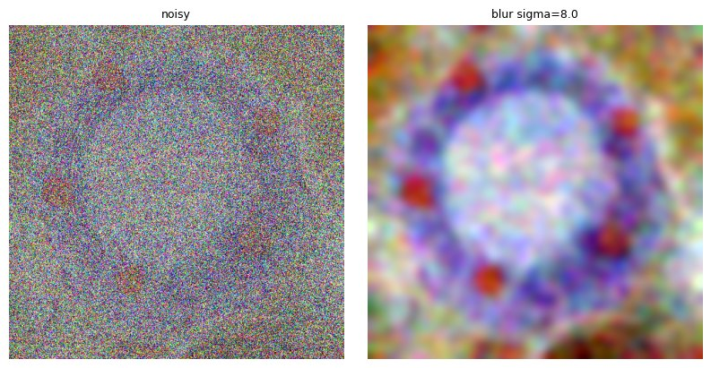
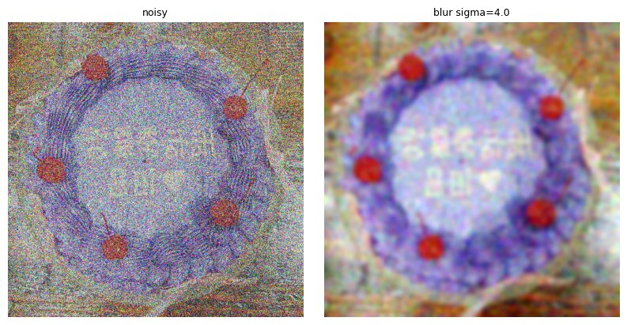
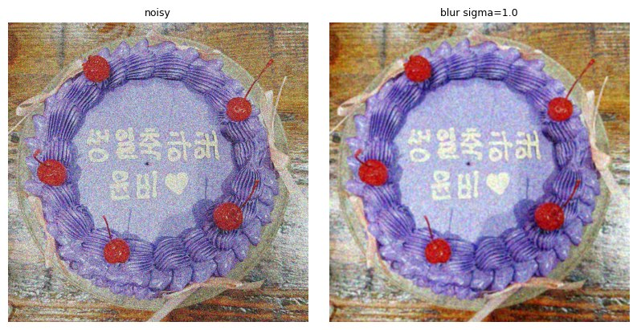
Blur removes some of the noise, but it also removes real detail. The more noise there is, the bigger σ has to be, and the more blurry the result gets. At t = 0.25 and 0.5 the letters on the cake are gone. Blur treats noise and detail the same way, since both are high frequency.
1.3 One-Step Denoising
The model predicts a velocity, and it is not noise. If we move from xt straight to
t = 1 along the predicted velocity, we get
x̂1 = xt + (1 - t) vθ(xt, t, c).
I used the prompt "a high quality photo" and torch.no_grad().
def one_step_denoise(x, t, condition, predict_velocity):
v = predict_velocity(x, t, condition)
return x + (1 - t) * v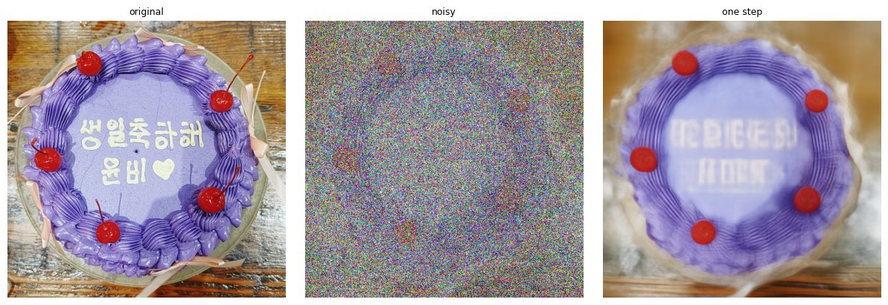
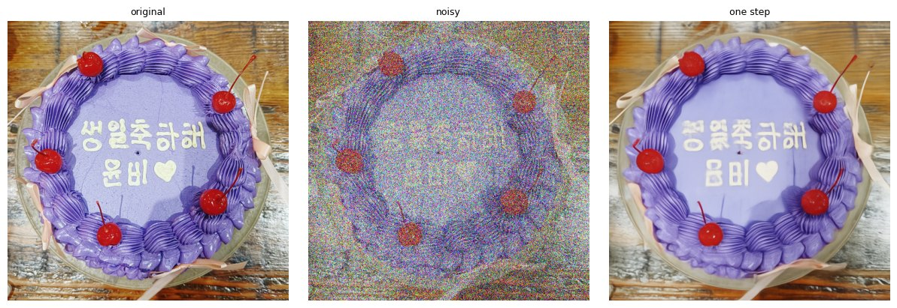
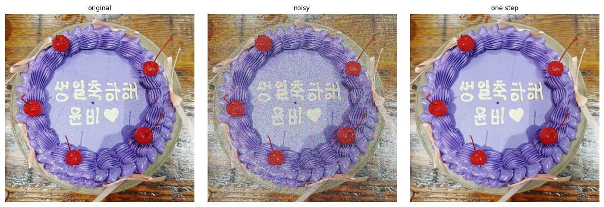
This is much better than blur. At t = 0.75 the result looks almost like the original. At t = 0.5 the cake and cherries are sharp, but the letters on the cake are rewritten in the wrong shapes. At t = 0.25 the result is blurry. The cherries are in the right places, but the letters are gone. When there is a lot of noise, one step can only guess an average of all the clean images that could fit the noisy one, so the result is smooth.
1.4 Visualizing Velocity
The predicted velocity is v̂t = vθ(xt, t, c), and the ground truth is vgt = x1 - ε. Multiplying by (1 - t), the update the model wants to add is (1 - t) v̂t, and the update that would give back the original image is (1 - t) vgt = x1 - xt. For every pixel, the error is the root mean square over the three color channels: Et = sqrt(mean over RGB of [(1 - t)(v̂t - vgt)]2).
@torch.inference_mode()
def velocity_diagnostics(x_t, t, clean_image, epsilon, condition, predict_velocity):
v_hat = predict_velocity(x_t, t, condition)
v_gt = clean_image - epsilon
predicted_update = (1 - t) * v_hat
ground_truth_update = (1 - t) * v_gt
error_map = ((predicted_update - ground_truth_update) ** 2).mean(dim=1).sqrt()
return predicted_update, ground_truth_update, error_map
The two updates use the same color scale for all three times, with zero shown as middle gray.
The error maps use one linear scale as well (the same vmin and vmax),
with the maximum taken over all three maps.
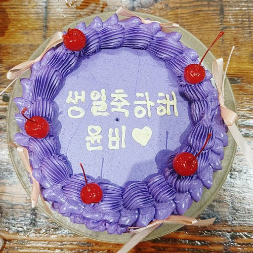
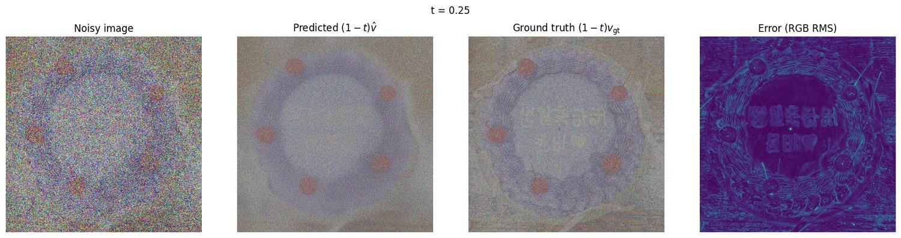
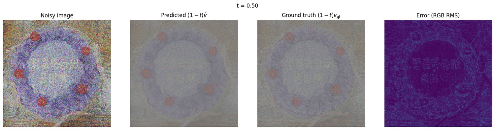
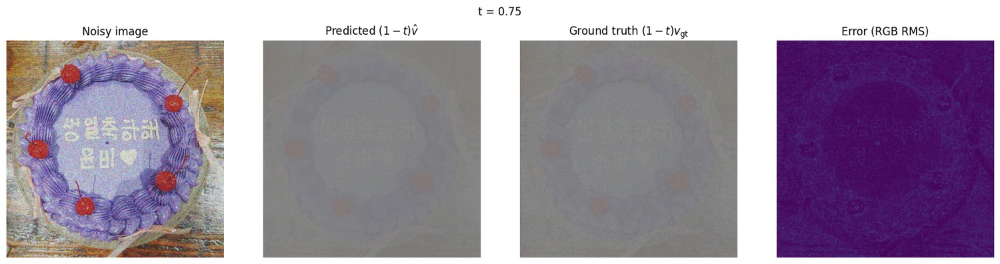
At t = 0.25 the predicted update is smooth. It fills in the round cake shape and the cherries, but not the frosting ridges or the letters, which the ground truth has. The error map is bright on those exact places: frosting ridges, letters, cherry stems and the ribbon edges. The error is small on smooth areas like the top of the cake. At t = 0.5 the prediction has more detail and the error is lower. At t = 0.75 both updates are close to gray, since most of the image is already there, and the error is small everywhere. Because the color scale is shared, the t = 0.75 maps look the darkest.
1.5 Iterative Denoising with Euler Sampling
One step is not enough when the input is very noisy. Instead, I take many small steps and ask the model for a new velocity after each one: xt+h = xt + h vθ(xt, t, c). My function uses h = 0.02. It shortens the last step so that the integration ends exactly at t = 1, and it returns the final image along with the saved states (the start, every fifth update, and the end).
@torch.inference_mode()
def euler_sample(x_start, t_start, step_size, velocity):
x = x_start.to(torch.float32)
n = math.ceil((1 - t_start) / step_size - 1e-9)
states = [(float(t_start), x.clone())]
for i in range(n):
t = t_start + i * step_size
h = min(step_size, 1 - t)
x = x + h * velocity(x, t)
if i == n - 1:
t_next = 1.0
else:
t_next = t_start + (i + 1) * step_size
if (i + 1) % 5 == 0 or i == n - 1:
states.append((float(t_next), x.clone()))
return x, statesTest with a constant velocity. I used a velocity field that is 1 everywhere, so the answer is known: starting from 0, the result must be 1 - tstart at the end. I counted the velocity calls and checked the final time and value.
| Start time | Step size | Velocity calls | Result |
|---|---|---|---|
| 0 | 0.02 | 50 | Ends at t = 1, value 1 |
| 0.5 | 0.02 | 25 | Ends at t = 1, value 0.5 |
| 0.93 | 0.02 | 4 (last step is 0.01) | Ends at t = 1, value 0.07 |
The 0.93 case checks the shortened final step: three steps of 0.02 get to 0.99, and the last step is only 0.01.
Denoising from t = 0.5. I started from the saved t = 0.5 noisy image and ran 25 Euler updates. The figure shows the start, every fifth update, and the final image.
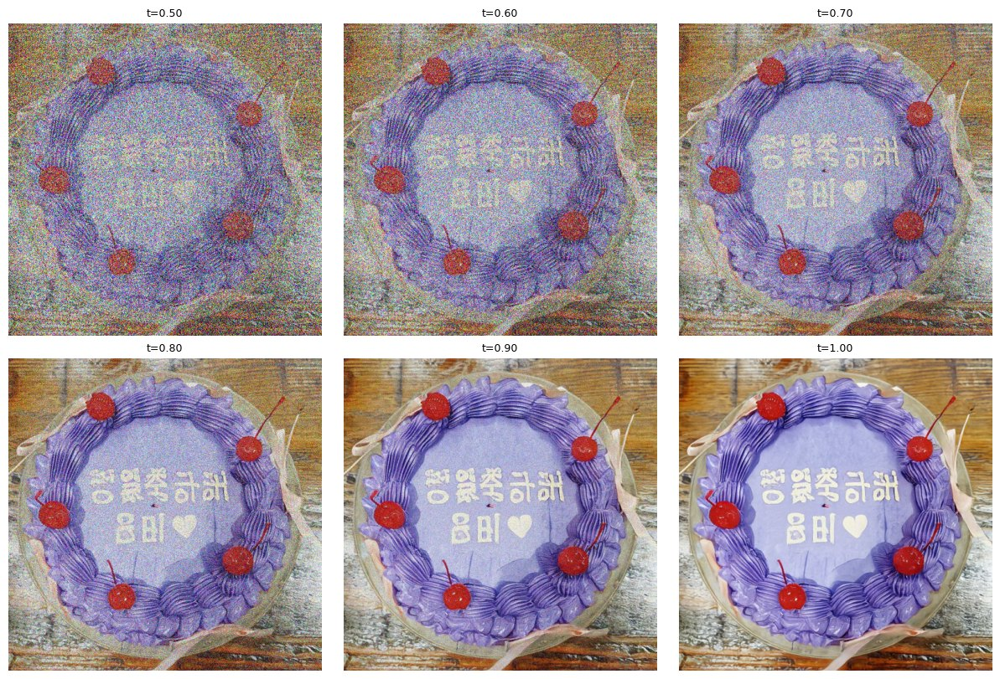
Comparison. All four results below come from the same noisy input at t = 0.5.
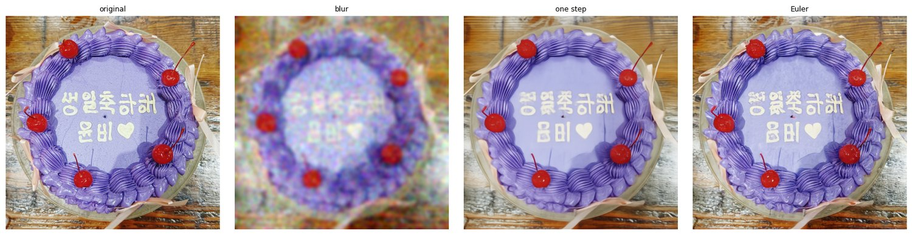
| Method | Mean squared error to the original |
|---|---|
| Gaussian blur | 0.0416 |
| One step | 0.0198 |
| Euler (25 steps) | 0.0238 |
Blur is clearly the worst: it is much blurrier and has a high error. The one-step and Euler results are both sharp. Euler has a slightly higher error, but I think it looks better. It keeps small details like the ribbon and the frosting, while the one-step result is a little smooth. Euler also commits to its own version of the letters, which is why the error is not lower. So the error is not a perfect measure here, because a sharp image with different details can score worse than a smooth image.
1.6 Generating Images from Noise
I called euler_sample with t_start = 0 and random noise as the starting
point (50 Euler steps), with the prompt "a high quality photo". The seeds are 180, 181, 182, 183
and 184.
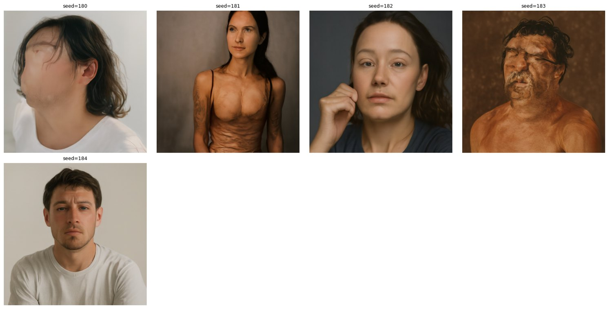
Subject bias. All five images are portraits of a single person, even though the prompt only says "a high quality photo". The pictures are close-ups of the face or upper body with a plain background. The image quality is also low without guidance: seed 180 has no face, seed 181 has strange skin on the body, and seed 183 has a warped face. Seeds 182 and 184 look the best. So the model seems to treat "a high quality photo" as "a portrait of a person".
Conditional Generation and Guidance
2.1 Classifier-Free Guidance
For classifier-free guidance, I predict the velocity twice at the same x and t: once with the prompt
(vc) and once with the empty prompt (vu). Then I push away from the empty
prediction: vcfg = vc + w (vc - vu). I used w = 7 and
h = 0.02. Setting w = 0 should return the normal prompted prediction, and I checked that with
torch.equal.
@torch.no_grad()
def cfg_velocity(x, t, condition, w, predict_velocity, null_condition=''):
v_c = predict_velocity(x, t, condition)
v_u = predict_velocity(x, t, null_condition)
return v_c + w * (v_c - v_u)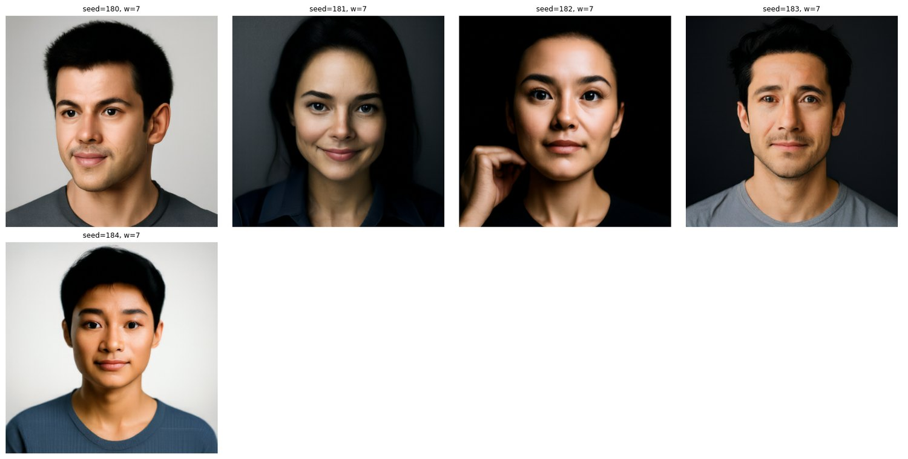
Comparison with 1.6. With guidance, the faces look normal and clean, the skin looks like real skin, and the images are sharper. The weird shapes in seeds 180, 181 and 183 are gone. The image from seed 182 keeps the same pose as before (a hand on the cheek), but the other seeds change a lot, so the noise does not fix the whole picture. All five are still portraits of a person, so guidance fixes the quality but not the bias toward portraits.
Creative Applications
In this part I use h = 0.02, w = 7 and the empty prompt for the unconditional branch.
3.1 Image-to-Image Editing
To edit a real image, I add a small amount of noise to it and then denoise it with the prompt. The noisy start is (1 - tstart) ε + tstart x1, and I integrate from tstart to 1 with guidance. A small tstart means a lot of noise, so the model changes the image more. The seven starting times are 0.02, 0.04, 0.06, 0.10, 0.14, 0.25 and 0.50, and the prompt is "a high quality photo". The same noise (seed 180) is used for all of them.
def edit(image, noise, t_start, condition, predict_velocity, w=7, step_size=0.02):
x_start = interpolate(image, noise, t_start)
def velocity(x, t):
return cfg_velocity(x, t, condition, w, predict_velocity, null_condition)
result, _ = euler_sample(x_start, t_start, step_size, velocity)
return resultThe Campanile
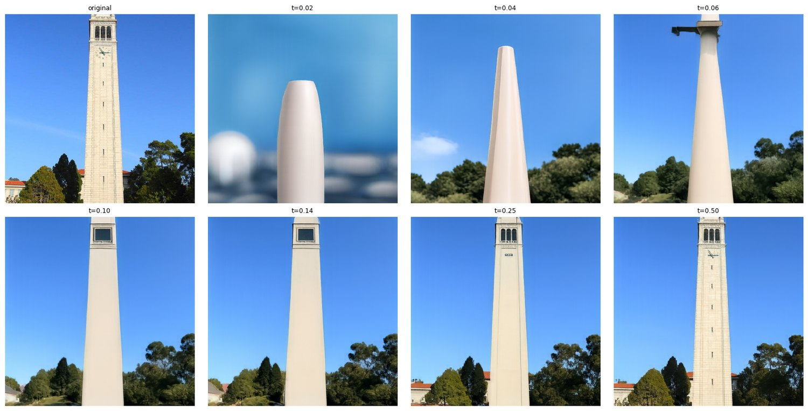
At t = 0.02, 0.04 and 0.06 the tower is lost and the result is a smooth white shape with no windows or bricks. At 0.10 and 0.14 it is a plain tower with one window. At 0.25 the arched windows come back, and at 0.50 the brick lines and the clock are almost the same as in the original.
My own images
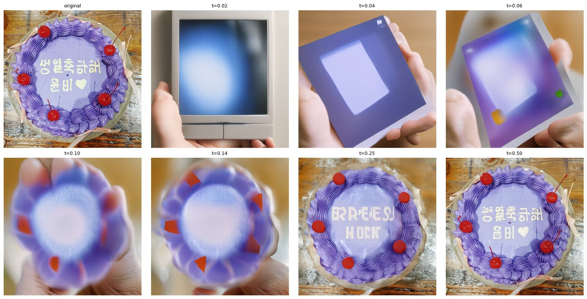
The cake changes into something else when t is small: a device held in a hand (0.02 to 0.06) and a blurry purple shape in a hand (0.10 and 0.14). At 0.25 it is a cake again with the same cherries, but the letters are broken. At 0.50 it is close to the original.
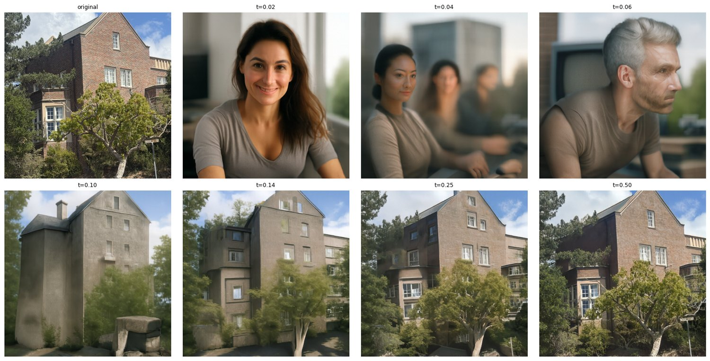
The building turns into portraits of people (0.02, 0.04, 0.06), then a gray concrete building with trees (0.10 and 0.14). At 0.25 it is a brick building again but with many changed details, and at 0.50 it is close to the original.
A web image and two drawings
The web image is a portrait photo I downloaded. The drawings are my own and are drawn in the center of a square canvas: a slice of toast and a candle.
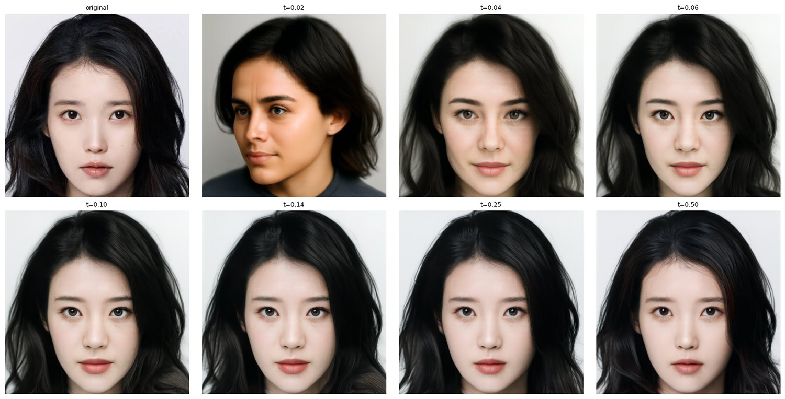
At 0.02 and 0.04 it is a different person. From 0.06 it is the same face with small changes to the eyes, hair and skin. By 0.50 it is almost the same image.
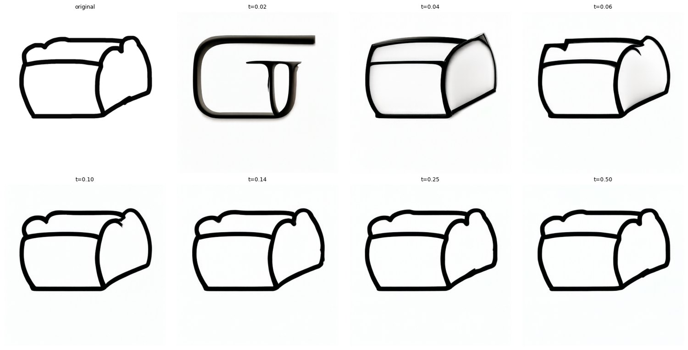
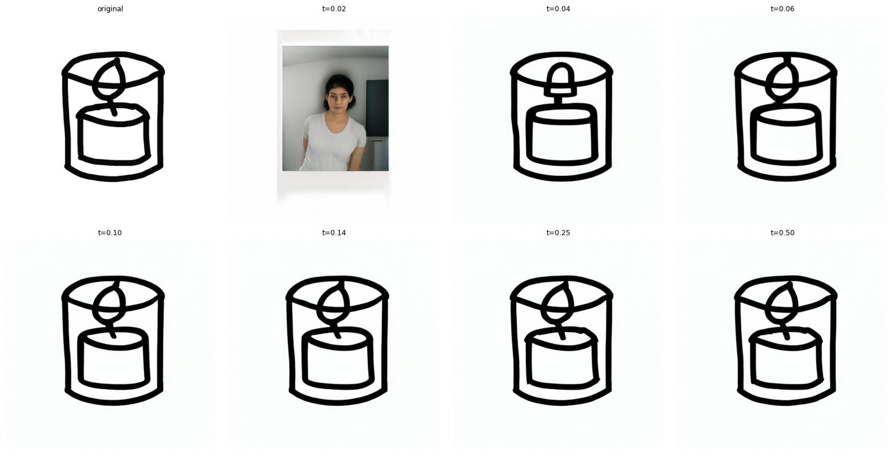
For the drawings, almost nothing changes from t = 0.06 or 0.10 on, since the lines are simple on a white background and the model mostly redraws them. At t = 0.02 they change completely: the toast becomes a black letter shape and the candle becomes a photo of a person standing in a room. At 0.04 the toast becomes a rounded 3D loaf and the candle flame becomes a dome.
3.2 Text-Guided Image Editing
This is the same as 3.1, but I replace "a high quality photo" with a prompt that describes the edit I want. The seven starting times are the same.
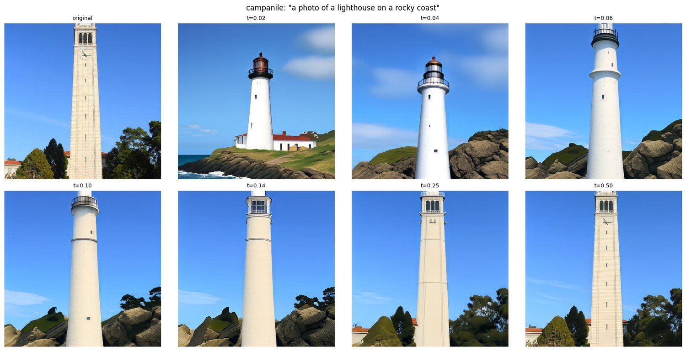
Small starting times give real lighthouses by the sea. From 0.06 to 0.14 the tower becomes a plain white lighthouse with rocks at the bottom, which is the nicest edit since it keeps the shape. At 0.25 only the top looks like a lantern room, and at 0.50 it is almost the original.
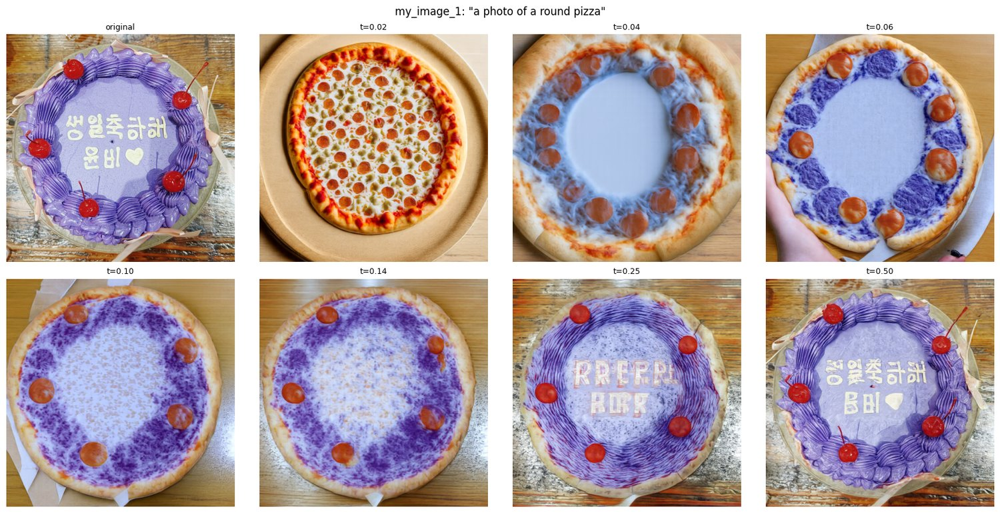
At 0.02 and 0.04 it is a regular pizza with only a hint of the cake. At 0.10 and 0.14 the result is a pizza with purple topping and red round toppings exactly where the cherries were, so it keeps the layout of the cake. At 0.25 the cake is back with a pizza-like crust, and at 0.50 it is mostly the original.
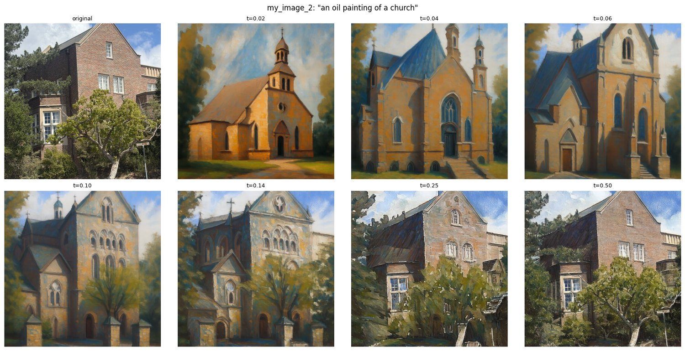
From 0.02 to 0.14 the building becomes an oil painting of a church with towers and arched windows. At 0.25 and 0.50 it is an oil painted version of the same building, so the painting style stays but the shape of the building comes back.
3.3 Visual Anagrams
A visual anagram is one image that shows two different pictures, depending on whether it is upright or rotated by 180 degrees. At every step, I get a guided velocity for the upright image with prompt p1. I also rotate the image, get a guided velocity with prompt p2, and rotate that velocity back. The average of the two is used for the Euler step.
def rotate180(x):
return torch.flip(x, (-2, -1))
def visual_anagrams(noise, condition_a, condition_b, predict_velocity, w=7, step_size=0.02):
def velocity(x, t):
v_a = cfg_velocity(x, t, condition_a, w, predict_velocity, null_condition)
v_b = rotate180(cfg_velocity(rotate180(x), t, condition_b, w, predict_velocity, null_condition))
return (v_a + v_b) / 2
result, _ = euler_sample(noise, 0, step_size, velocity)
return resultI made two illusions. Each figure shows the image upright (left, first prompt) and rotated by 180 degrees (right, second prompt).
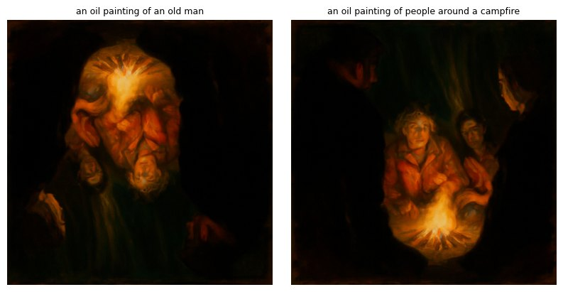
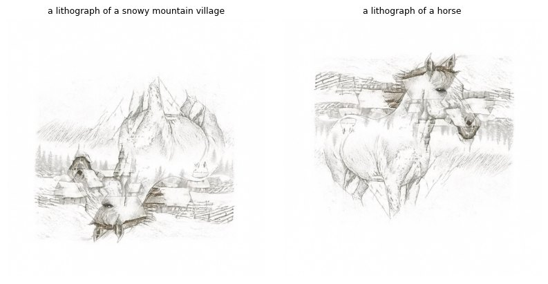
Both subjects can be recognized in each illusion. In the first one the old man's face is a bit odd, and in the second one a piece of the horse (the eye) shows up in the village view. These prompts worked with the first seeds I tried.
3.4 Hybrid Images
A hybrid image shows one picture from far away and another up close. At each step I predict two guided velocities from the same image, one for each prompt. I keep the low frequencies of the first (distant) one and the high frequencies of the second (close) one: v = lowpass(v1) + v2 - lowpass(v2). The low-pass filter is a Gaussian blur with kernel size 265 and σ = 16.
def lowpass(x, sigma=16.0):
kernel = 2 * round(16.5 * x.shape[-1] / 64) + 1
return gaussian_blur(x, [kernel, kernel], [sigma, sigma])
def make_hybrids(noise, condition_a, condition_b, predict_velocity, w=7, step_size=0.02):
def velocity(x, t):
v_a = cfg_velocity(x, t, condition_a, w, predict_velocity, null_condition)
v_b = cfg_velocity(x, t, condition_b, w, predict_velocity, null_condition)
return lowpass(v_a) + v_b - lowpass(v_b)
result, _ = euler_sample(noise, 0, step_size, velocity)
return resultFor each hybrid I show the full size image (what you see close up) and a 64 × 64 version (what you see from far away). The 64 × 64 images are shown at their real size.
Hybrid 1: skull (far) and forest (close), seed 182
Hybrid 2: skull (far) and waterfall (close), seed 182
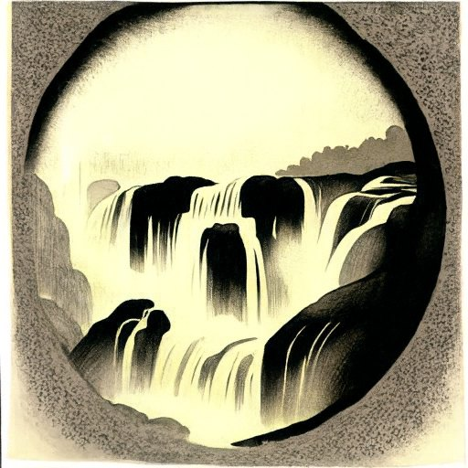
These two worked well. In the small version of the forest hybrid the trees turn into the eye sockets and the nose of a skull, and in the waterfall one the round outline and the dark areas look like a skull. Hybrids depend a lot on the seed, so here are the other seed I tried (183) for comparison. Its far version is more like a round head than a skull, so I did not choose it.
Bells & Whistles for Part A
Visual Anagrams with Two Other Transformations
The anagram idea works for any transformation that can be undone exactly and that keeps Gaussian noise Gaussian. For each view, I apply the transformation to the current image, predict the velocity for that view's prompt, and undo the transformation before averaging. I tried two transformations from the Visual Anagrams paper: a 90 degree rotation and a negative (flipping the sign of every pixel).
def transformed_anagram(noise, condition_a, condition_b, view, inverse_view, predict_velocity, w=7, step_size=0.02):
def velocity(x, t):
v_a = cfg_velocity(x, t, condition_a, w, predict_velocity, null_condition)
v_b = inverse_view(cfg_velocity(view(x), t, condition_b, w, predict_velocity, null_condition))
return (v_a + v_b) / 2
result, _ = euler_sample(noise, 0, step_size, velocity)
return result
def rotate90(x):
return torch.rot90(x, 1, (-2, -1))
def rotate90_inverse(x):
return torch.rot90(x, -1, (-2, -1))
def negate(x):
return -x90 degree rotation: tall tree and fish
A tree is tall and a fish is wide, so rotating by a quarter turn is a natural way to swap them. Seed 180 worked well. The left side is the upright image and the right side is the image rotated by 90 degrees.
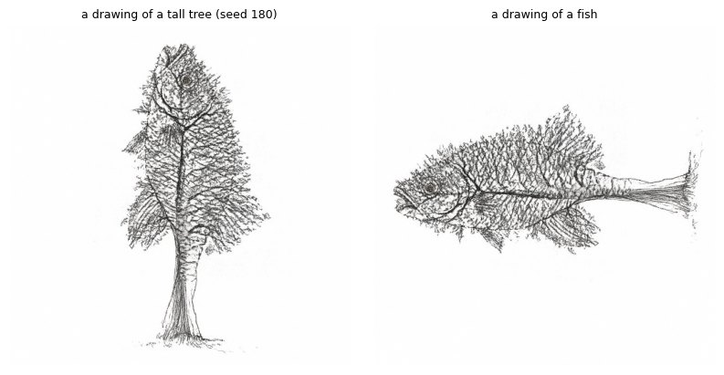
Seeds 181 and 182 for the same pair gave fainter drawings, but the idea is still visible:
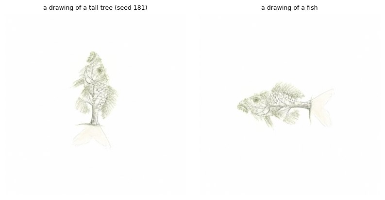
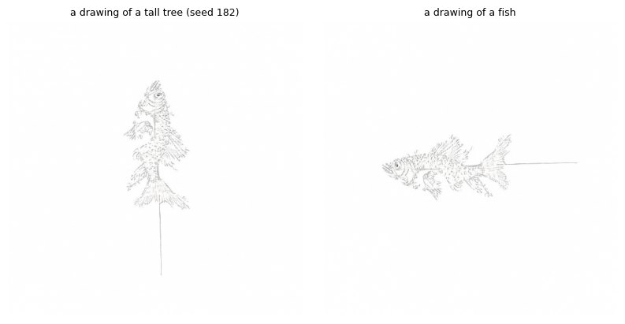
Negative: snowy village and horse
For the negative, the second picture appears when the colors are inverted (dark becomes light). Here the left is the normal image, and the right is the negative. The pair "a lithograph of a snowy mountain village" and "a lithograph of a horse" worked in all three seeds I tried. Seed 181 gave the cleanest horse, so that is my main result.
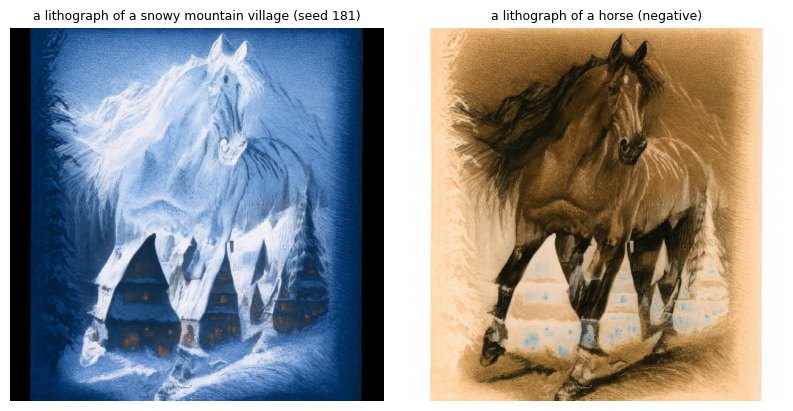
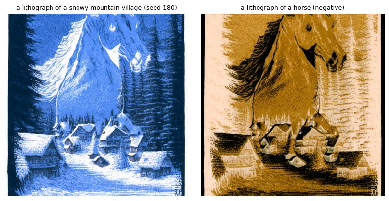
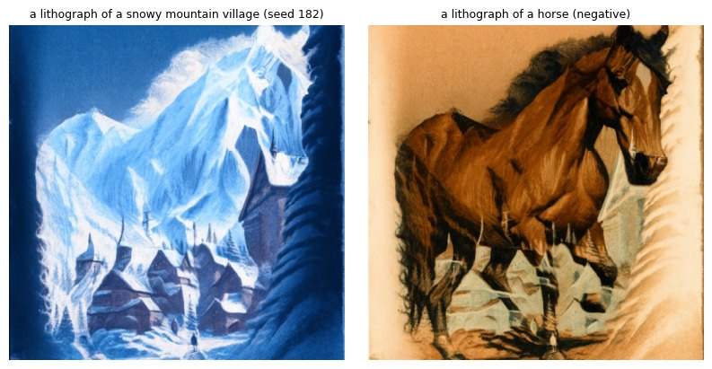
I also tried "an oil painting of a vase of flowers" and, in the negative, "an oil painting of a woman's face". The seed 180 result is a good one, with a face that appears when the colors are inverted. The other two seeds are blurrier.
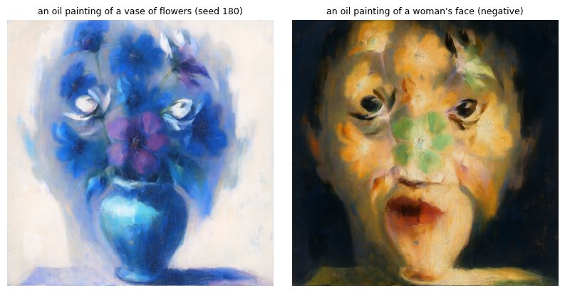
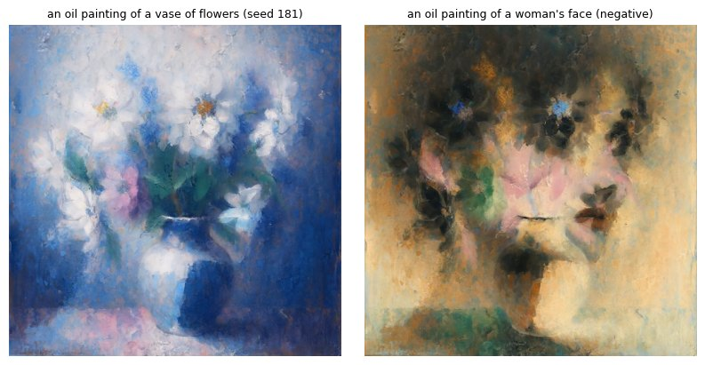
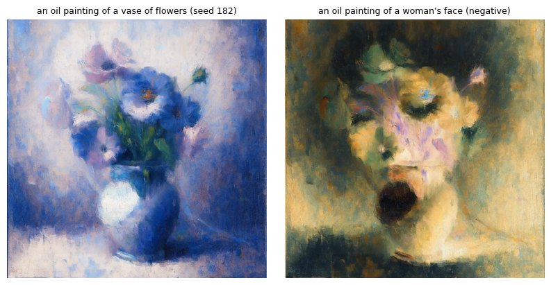
Course Logo
For the course logo, I used the UC Berkeley logo as the input image (the seal and the name) and applied text-guided editing from 3.2. I used smaller starting times than before, from 0.05 to 0.25, because the logo has a lot of fixed structure. I tried two prompts. The first one, "a blue and gold logo with a camera lens in the center", turns the seal into plain rings at small times.
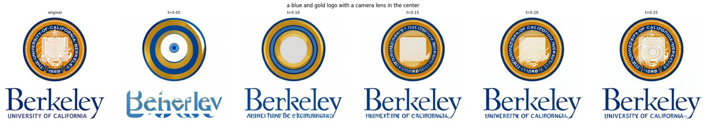
The second prompt, "a blue and gold seal with a camera", worked better. A camera replaces the book in the middle, and the seal stays recognizable. At t = 0.05 the word "Berkeley" is destroyed, so I did not use that time.
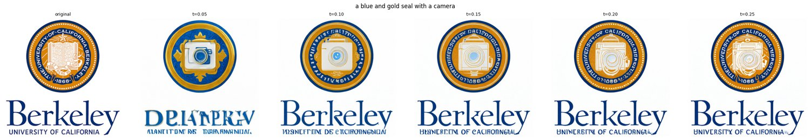
I picked t = 0.15 and tried four seeds. Seed 181 gives my final logo: the camera in the center has a clear lens and a clean body. The ring of letters around the seal gets scrambled, which is normal for this model, since it cannot write text well.
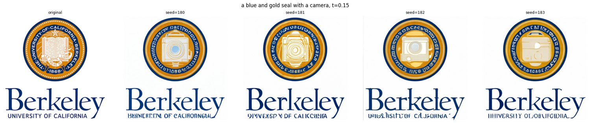
Part B · Training from Scratch
A Single-Step Denoising UNet
In Part B, I build and train UNets on MNIST digits (28 × 28, pixel values in [0, 1]). Everything uses PyTorch, the Adam optimizer, a mean squared error loss, and seed 180, on a Tesla T4 GPU.
1.1 Implementing the UNet
The UNet has a number of hidden channels D. First, here are the small building blocks. Every convolution is followed by batch norm and GELU.
- Conv: 3 × 3 convolution, stride 1, padding 1. It changes the number of channels and keeps the size.
- DownConv: 3 × 3 convolution with stride 2. It halves the height and width.
- UpConv: transposed convolution with a 4 × 4 kernel and stride 2. It doubles the height and width.
- Flatten: average pooling over 7 × 7, then GELU. It turns 7 × 7 into 1 × 1.
- Unflatten: transposed convolution with a 7 × 7 kernel and stride 7. It turns 1 × 1 back into 7 × 7.
- ConvBlock, DownBlock, UpBlock: two Convs; a DownConv plus a ConvBlock; and an UpConv plus a ConvBlock.
The full network goes down twice (28 to 14 to 7), squeezes to a single pixel, and then goes back up. At each step on the way up, I concatenate the feature map from the same size on the way down (a skip connection) along the channel axis.
| Step | Output shape |
|---|---|
| Input | 1 × 28 × 28 |
| conv0 (ConvBlock) | D × 28 × 28 |
| down1 (DownBlock) | D × 14 × 14 |
| down2 (DownBlock) | 2D × 7 × 7 |
| flatten | 2D × 1 × 1 |
| unflatten | 2D × 7 × 7 |
| up1 (input: unflatten and down2 joined, 4D channels) | D × 14 × 14 |
| up2 (input: up1 and down1 joined, 2D channels) | D × 28 × 28 |
| conv1 (input: up2 and conv0 joined, 2D channels) | D × 28 × 28 |
| Final 3 × 3 conv | 1 × 28 × 28 |
1.2.1 Training the Denoiser
The denoiser takes a noisy digit z = x + σ ε and tries to return the clean digit x, with the loss L = E ||Dθ(z) - x||2. First, here is what the noising looks like for σ = 0.0, 0.2, 0.4, 0.5, 0.6, 0.8 and 1.0 on five test digits (each row is one digit).
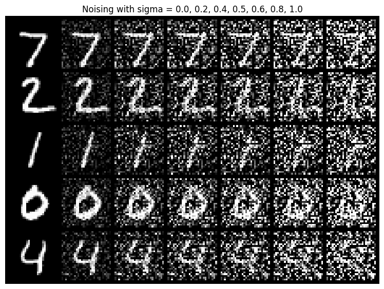
I trained a UNet with D = 128 to remove noise at σ = 0.5. The settings are: batch size 256, Adam with learning rate 1e-4, 5 epochs, and shuffled training data. The noise is added to each batch after it is loaded, so every epoch sees new noise on the same digits.
model = UnconditionalUNet(1, hidden_dim).to(device)
optimizer = torch.optim.Adam(model.parameters(), lr=learning_rate)
criterion = nn.MSELoss()
train_losses = []
for epoch in range(num_epochs):
for i, (images, _) in enumerate(tqdm(train_loader)):
images = images.to(device)
noisy = images + noise_level * torch.randn_like(images)
outputs = model(noisy)
loss = criterion(outputs, images)
optimizer.zero_grad()
loss.backward()
optimizer.step()
train_losses.append(loss.item())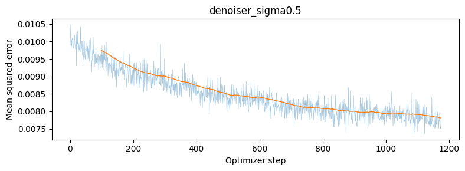
The loss drops quickly in the first few hundred steps and then goes down slowly. These are results on the first eight test digits at σ = 0.5. Each figure has three rows: the clean digit, the noisy digit and the denoised digit.
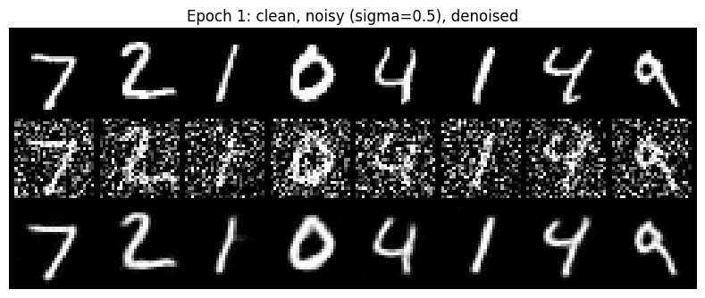
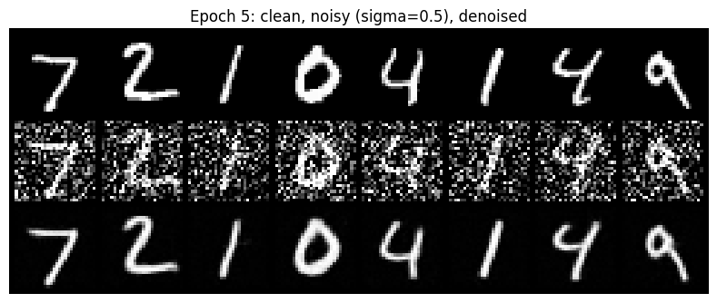
The model already works well after one epoch. After five epochs the strokes are a little smoother and sharper, and the digits are close to the clean ones.
1.2.2 Out-of-Distribution Testing
The model was trained only at σ = 0.5. Here I test it on other noise levels, using the same test digits and the same noise pattern, scaled by each σ. Rows alternate between the noisy digit and the denoised digit, for two digits.
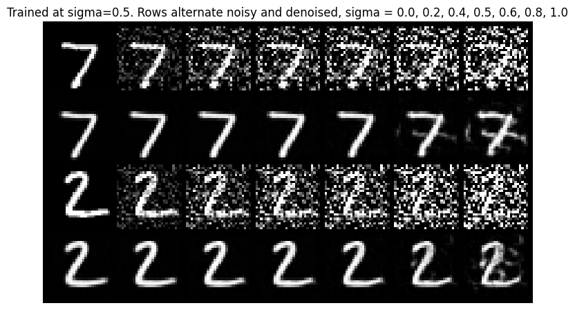
It does well from σ = 0 up to about 0.6. With no noise it just gives back the digit, and at lower levels like 0.2 and 0.4 it still works even though it never saw them. At σ = 0.8 and 1.0 the results break down: there are leftover marks and parts of the stroke are damaged, since the noise is stronger than anything the model saw in training.
1.2.3 Denoising Pure Noise
Now the input is pure Gaussian noise (z = ε) and the target is still a clean digit. I trained a new D = 128 UNet in the same way: 5 epochs, Adam with learning rate 1e-4, and batch size 256. I fed it new random noise to see the output.
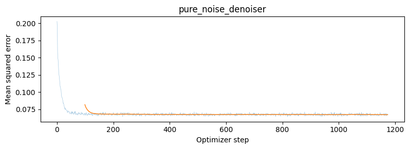
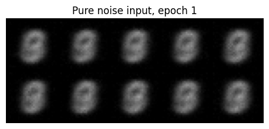
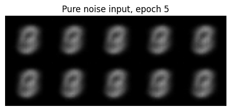
What I see. All ten outputs look almost the same: a blurry white blob in the middle of the image that is a bit like a digit, but not any single digit. It looks like an 8 or 0 mixed with parts of other digits. There is no clear sharp stroke anywhere, and the result after epoch 5 is about the same as after epoch 1.
Why. The input is pure noise, so it has no information about which digit we want. The model has to give one answer for every input. With the mean squared error, the answer that gives the lowest error is the average of all the training digits (the centroid). Every input gets this same average. The mean image of the training set (below) looks like the outputs: a blurry shape that is thick in the middle. It is brightest where most digits have ink, and it fades toward the edges. The loss curve agrees: it drops fast and then stays flat, since the model quickly finds the average and cannot do better.
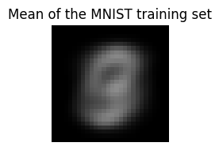
Flow Matching
A single step from noise gives only the average digit, so instead I train a flow model that takes many small steps. Here the noisy image is xt = (1 - t) x0 + t x1, where x0 is Gaussian noise, x1 is a clean digit and t is between 0 and 1. The target is the velocity u(xt, t) = x1 - x0, and the loss is E ||(x1 - x0) - uθ(xt, t)||2, with t drawn uniformly from [0, 1].
- 2.1 Time-conditioned UNet
- 2.2 Training
- 2.3 Sampling
- 2.4 Class conditioning
- 2.5 Class-conditioned training
- 2.6 Class-conditioned sampling
2.1 Implementing a Time-Conditioned UNet
The network now also needs to know t. Because t is already between 0 and 1, I use it directly as a single
number. It goes through two small fully connected blocks (Linear, GELU, Linear): one makes 2D numbers (t1)
and one makes D numbers (t2). I multiply them into the feature maps in two places, replacing the
original layers: unflatten = unflatten * t1 and up1 = up1 * t2.
class FCBlock(nn.Module):
def __init__(self, in_channels: int, out_channels: int):
super().__init__()
self.block = nn.Sequential(
nn.Linear(in_channels, out_channels),
nn.GELU(),
nn.Linear(out_channels, out_channels),
)
def forward(self, x):
return self.block(x)
The rest of the UNet is the same as before. The only new lines in forward are these:
t = t.view(-1, 1).to(x.dtype)
t1 = self.fc1_t(t).view(-1, 2 * self.D, 1, 1)
t2 = self.fc2_t(t).view(-1, self.D, 1, 1)
...
unflat = self.unflatten(flat) * t1
u1 = self.up1(torch.cat([unflat, d2], dim=1)) * t2Training loss (Algorithm 1). For each batch I pick random noise x0 and a random t for every image, build xt, and compare the prediction with x1 - x0.
def time_fm_forward(unet, x_1, num_ts):
unet.train()
x_0 = torch.randn_like(x_1)
t = torch.rand(x_1.shape[0], device=x_1.device)
t_expanded = t.view(-1, 1, 1, 1)
x_t = (1 - t_expanded) * x_0 + t_expanded * x_1
pred = unet(x_t, t)
return F.mse_loss(pred, x_1 - x_0)Sampling (Algorithm 2). I start from noise at t = 0 and take Euler steps of size 1 / num_ts until t = 1. The function makes one image per call, and I set the seed for the noise.
@torch.inference_mode()
def time_fm_sample(unet, img_wh, num_ts, seed=0):
unet.eval()
dev = next(unet.parameters()).device
generator = torch.Generator(device=dev).manual_seed(seed)
x = torch.randn(1, 1, img_wh[0], img_wh[1], generator=generator, device=dev)
for i in range(num_ts):
t = torch.full((1,), i / num_ts, device=dev)
x = x + unet(x, t) / num_ts
return x2.2 Training the Time-Conditioned UNet
I trained a time-conditioned UNet with D = 64 for 10 epochs. The batch size is 64 and the optimizer is Adam with an initial learning rate of 1e-2. An exponential learning rate scheduler multiplies the rate by gamma = 0.1(1 / 10) after each epoch, so the rate falls to about one tenth by the end. I saved the model after epochs 1, 5 and 10.
time_unet = TimeConditionalUNet(1, 10, 64).to(device)
time_fm = TimeConditionalFM(time_unet, num_ts=50).to(device)
time_optimizer = torch.optim.Adam(time_fm.parameters(), lr=1e-2)
time_scheduler = torch.optim.lr_scheduler.ExponentialLR(time_optimizer, gamma=0.1 ** (1.0 / 10))
for epoch in range(10):
for images, _ in tqdm(time_loader):
images = images.to(device)
loss = time_fm(images)
time_optimizer.zero_grad()
loss.backward()
time_optimizer.step()
time_losses.append(loss.item())
time_scheduler.step()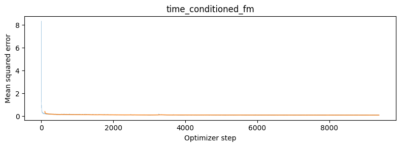
2.3 Sampling from the Time-Conditioned UNet
These are 40 samples from each saved model, with 50 Euler steps. The seeds are the same for each epoch (0 to 39), so the same position in each figure starts from the same noise.
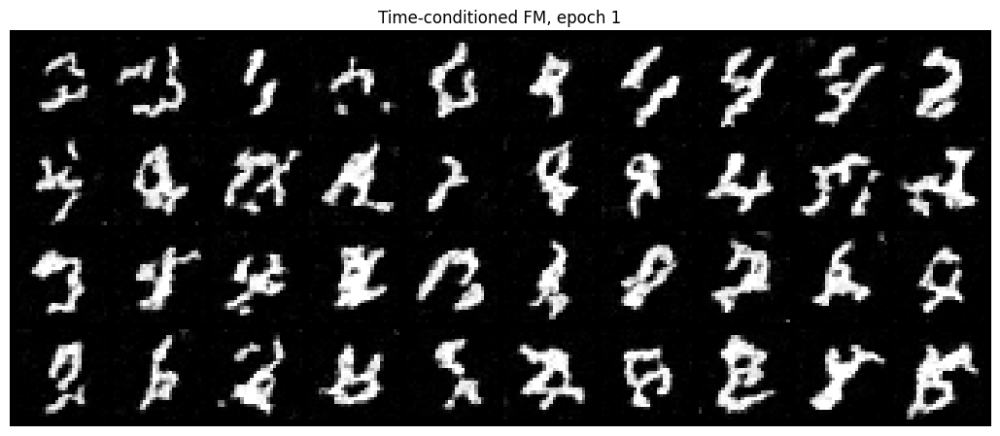
After one epoch the samples are only scribbles. By epoch 5 many look like digits, and by epoch 10 most of them do (I can see 0, 1, 2, 3, 4, 5, 6, 8 and 9), but some are still wrong or hard to read. The model does not know which digit to make, so it just makes something that looks like a digit.
2.4 Implementing a Class-Conditioned UNet
To choose which digit to generate, I add the class c, a one-hot vector with 10 entries. It uses two more
fully connected blocks, so there are four in total: fc1_t and fc2_t for time, and fc1_c and fc2_c for
the class. The class and time features are combined as
unflatten = c1 * unflatten + t1 and up1 = c2 * up1 + t2.
To get classifier-free guidance, I also train the model without the class: for 10% of the images in each batch,
the one-hot vector is set to all zeros (a mask of 0).
c = F.one_hot(c, self.num_classes).to(x.dtype)
if mask is not None:
c = c * mask.view(-1, 1).to(x.dtype)
t = t.view(-1, 1).to(x.dtype)
t1 = self.fc1_t(t).view(-1, 2 * self.D, 1, 1)
c1 = self.fc1_c(c).view(-1, 2 * self.D, 1, 1)
t2 = self.fc2_t(t).view(-1, self.D, 1, 1)
c2 = self.fc2_c(c).view(-1, self.D, 1, 1)
...
unflat = c1 * self.unflatten(flat) + t1
u1 = c2 * self.up1(torch.cat([unflat, d2], dim=1)) + t2Training loss (Algorithm 3). It is the same as Algorithm 1, with the class and the random mask.
def class_fm_forward(unet, x_1, c, p_uncond, num_ts):
unet.train()
n = x_1.shape[0]
x_0 = torch.randn_like(x_1)
t = torch.rand(n, device=x_1.device)
t_expanded = t.view(-1, 1, 1, 1)
x_t = (1 - t_expanded) * x_0 + t_expanded * x_1
mask = (torch.rand(n, device=x_1.device) >= p_uncond).float()
pred = unet(x_t, c, t, mask)
return F.mse_loss(pred, x_1 - x_0)Sampling (Algorithm 4). At each step I get a velocity with the class (uc) and one without it (uu), and use u = uu + γ (uc - uu) with γ = 5. Note that this is different from Part A, where the guidance was vc + w (vc - vu).
@torch.inference_mode()
def class_fm_sample(unet, c, img_wh, num_ts, guidance_scale=5.0, seed=0):
unet.eval()
dev = next(unet.parameters()).device
c = c.to(dev)
n = c.shape[0]
generator = torch.Generator(device=dev).manual_seed(seed)
x = torch.randn(n, 1, img_wh[0], img_wh[1], generator=generator, device=dev)
mask_on = torch.ones(n, device=dev)
mask_off = torch.zeros(n, device=dev)
caches = [x.cpu()]
for i in range(num_ts):
t = torch.full((n,), i / num_ts, device=dev)
v_c = unet(x, c, t, mask_on)
v_u = unet(x, c, t, mask_off)
v = v_u + guidance_scale * (v_c - v_u)
x = x + v / num_ts
if (i + 1) % 10 == 0 or i == num_ts - 1:
caches.append(x.cpu())
return x, torch.stack(caches, dim=1)2.5 Training the Class-Conditioned UNet
The training is the same as in 2.2 (D = 64, batch size 64, Adam with learning rate 1e-2, 10 epochs, and the exponential scheduler with gamma = 0.1(1 / 10)), with the class labels, the 10% class dropout and 300 steps for sampling. I saved the model after epochs 1, 5 and 10.
optimizer = torch.optim.Adam(fm.parameters(), lr=1e-2)
scheduler = torch.optim.lr_scheduler.ExponentialLR(optimizer, gamma=0.1 ** (1.0 / 10))
for epoch in range(10):
for images, labels in tqdm(loader):
images = images.to(device)
labels = labels.to(device)
loss = fm(images, labels)
optimizer.zero_grad()
loss.backward()
optimizer.step()
scheduler.step()2.6 Sampling from the Class-Conditioned UNet
For each saved model I made 40 images: four for each digit from 0 to 9. Each row has the digits 0 to 9, and there are four rows. I used 300 Euler steps, a guidance scale of 5, and the same seed for every model.
labels_40 = torch.arange(10).repeat(4).to(device)
samples, _ = fm.sample(labels_40, (28, 28), guidance_scale=5.0, seed=SEED)This is much better than the time-only model. Even after one epoch nearly every image is the right digit, although some are a bit rough (for example some 2s and 4s). By epoch 5 the digits are cleaner, and at epoch 10 they are sharp, with a different handwriting style in each row. The class label is the main reason: the model knows what to draw, so it only needs to learn the style.
Removing the learning rate scheduler
To compensate for removing the scheduler, I trained another model with a constant learning rate of 1e-3 for all 10 epochs, and kept everything else the same. I picked 1e-3 because it is where the scheduled run ends up (it falls from 1e-2 to about 1e-3), and a constant 1e-2 with Adam could be unstable.
optimizer = torch.optim.Adam(fm.parameters(), lr=1e-3)
for epoch in range(10):
for images, labels in tqdm(loader):
images = images.to(device)
labels = labels.to(device)
loss = fm(images, labels)
optimizer.zero_grad()
loss.backward()
optimizer.step()Comparison. By epoch 10 the two models give similar results, and both end with a loss around 0.08 to 0.09. The no-scheduler model looks better early on: at epoch 1 its digits are cleaner than those of the scheduled model, which starts at a large learning rate (1e-2, with a big spike in the first steps of its loss curve). The scheduled model has a smoother loss at the end because its learning rate has become small. The constant rate keeps the loss a bit noisier. So the trade-off is this: with the scheduler I can start with a high rate and let it settle by itself, but I need to choose the starting rate and the decay. Without it there is one fewer thing to tune, but I have to find a single good rate by hand, which needs to be small enough to be stable at the start and still good at the end.
Bells & Whistles for Part B
The time-only model has to make digits with no label, and its samples (shown again below) are worse than the class-conditioned ones. I tried to improve it, with five changes:
- Bigger network: D = 128 instead of 64.
- More training: 20 epochs, batch size 128, Adam with a learning rate of 2e-3 and the same exponential decay.
- Better time features: instead of the plain number t, the input is t together with sine and cosine of t at 8 frequencies (17 numbers).
- More time conditioning: five fully connected blocks scale the features after down2, unflatten, up1, up2 and the last conv block. I use x * (1 + s) so that the scale starts near 1.
- EMA weights: I keep a slow moving average of the weights (decay 0.999) and use it for sampling. I also sample with 100 Euler steps instead of 50.
def time_features(t, num_freqs=8):
t = t.view(-1, 1).float()
freqs = (2.0 ** torch.arange(num_freqs, device=t.device).float()) * math.pi
angles = t * freqs
return torch.cat([t, torch.sin(angles), torch.cos(angles)], dim=1)In the UNet, each of the five blocks turns these features into a scale s, and the feature map is multiplied by (1 + s):
f = time_features(t, self.num_freqs).to(x.dtype)
s_down = self.fc_down(f).view(-1, 2 * self.D, 1, 1)
...
d2 = self.down2(d1) * (1 + s_down)
unflat = self.unflatten(self.flatten(d2)) * (1 + s_flat)
u1 = self.up1(torch.cat([unflat, d2], dim=1)) * (1 + s_up1)
u2 = self.up2(torch.cat([u1, d1], dim=1)) * (1 + s_up2)
c1 = self.conv1(torch.cat([u2, c0], dim=1)) * (1 + s_out)The EMA update is called after every optimizer step:
@torch.no_grad()
def update_ema(ema_model, model, decay):
for p_ema, p in zip(ema_model.parameters(), model.parameters()):
p_ema.mul_(decay).add_(p.detach(), alpha=1 - decay)
for b_ema, b in zip(ema_model.buffers(), model.buffers()):
b_ema.copy_(b)
I call update_ema(ema_unet, bw_unet, 0.999) after every step, and the samples below come
from the EMA model.
Here are 40 samples from the original time-only model and 40 from the improved one, using the same seeds (0 to 39), so each picture in one figure starts from the same noise as in the other.
The improved model is a bit better. The strokes are cleaner and thicker, and more of the images are clear digits (there are many clean 0s, 1s, 4s, 6s and 8s). Some samples are still not real digits, for example some in the first row and the third row. I only judged this by looking at the samples, and I did not measure it with a number. It is also still not as good as the class-conditioned model, which makes the right digit every time. I did not test each change on its own, so I cannot say which of the five changes helped the most.
What I Learned
- Velocity, not noise. The model predicts x1 - x0, and the clean image estimate is xt + (1 - t) v. The velocity plots showed me that the error is largest on fine details, and that it gets small as t gets closer to 1.
- Many small steps beat one big step. One step gives a smooth average, and Euler sampling brings back the sharp details. The same idea shows up in Part B: a single step from pure noise gives only the average digit.
- Guidance makes a big difference. With classifier-free guidance, the faces in Part A became much cleaner, and in Part B the class-conditioned model made the right digit almost every time.
- The starting time controls the edit. A small tstart changes the image a lot, and a larger one keeps it close. Simple drawings on a white background hardly change unless the noise is very strong.
- Illusions need luck and several tries. Visual anagrams and hybrid images depend a lot on the prompt pair and on the seed. Some pairs did not work for me, so I kept the ones that did and showed a few other seeds for comparison.
- Small things matter in training. The learning rate scheduler changed how the first epochs looked, and the pure-noise experiment showed me clearly that an MSE loss gives the average when the input has no information.